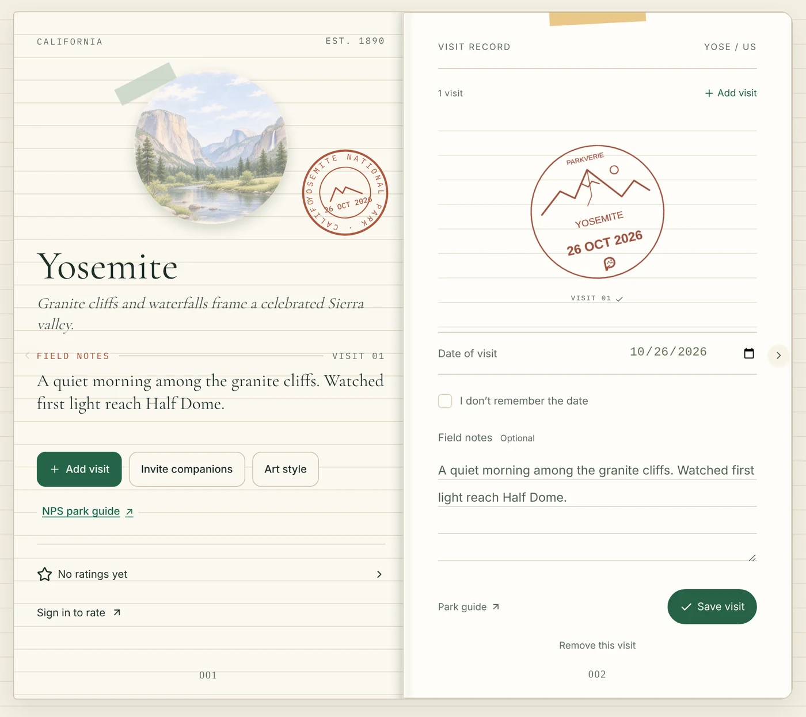
The Idea
The United States has 64 national parks, and Chiricahua in Arizona became the newest one in October 2026. Many visitors collect the ink cancellation stamps at park visitor centers in a paper passport book. A stamp keeps the place and the date, but the notes, the photos, and the names of the people who came along are usually kept somewhere else.
I built Parkverie to keep these pieces in one journal. Every park has a page, and each visit adds a dated stamp along with the notes and photos from that day. As the pages fill in, the journal shows which parks I have visited and which are still to explore.
Features
Each of the 64 parks has its own page with an illustration and a short description. A link leads to the official park guide.
Adding a visit puts a dated stamp on the page. Return trips add more stamps, and a visit with a forgotten date can still be recorded.
Each visit has room for a few lines of field notes. With an account, photos from the trip go into an album.
Field journal, Vintage poster, Modern outdoor, and Watercolor diary. Each look has its own cover, park art, and poster design.
Plan a multi-day trip with days and stops on a map, and invite companions. A finished trip can be exported as an image or a short film.
Save the whole collection as a poster, one park page as a postcard, or the journal as a PDF.
Follow friends, read their journals, and rate the parks you have visited. You choose what others can see in the privacy settings.
Free in the browser and on iPhone, in English and Chinese. On the foldable iPhone Duo, the journal opens as a two-page spread.
Four Looks
The same journal can be shown in four looks: a cloth field journal, a vintage poster in the style of the WPA-era park prints, a plain modern layout, and a hand-lettered watercolor diary. Changing the look changes the cover, the park art, and the poster. The visits and notes stay the same.
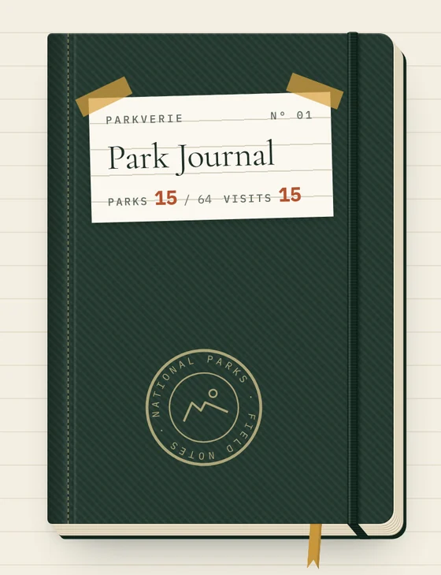
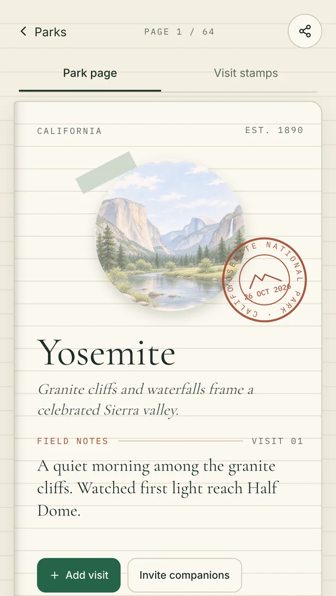
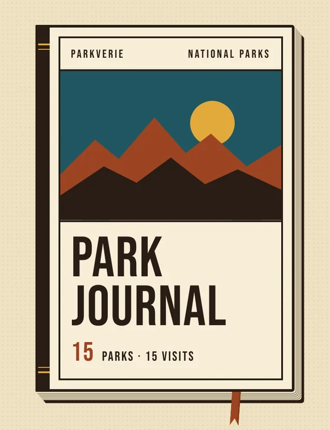
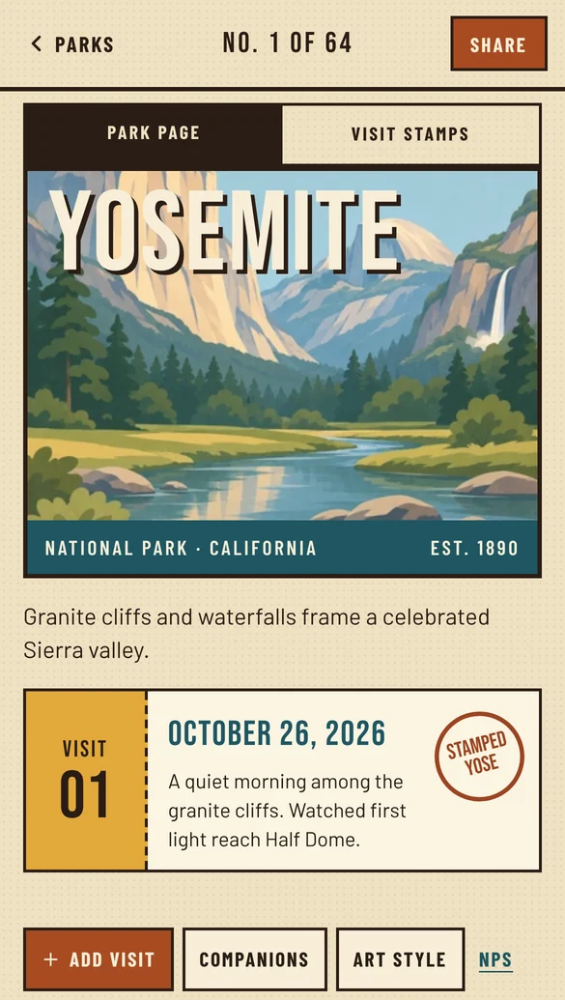
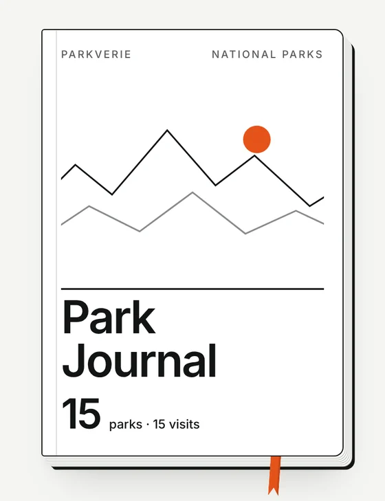
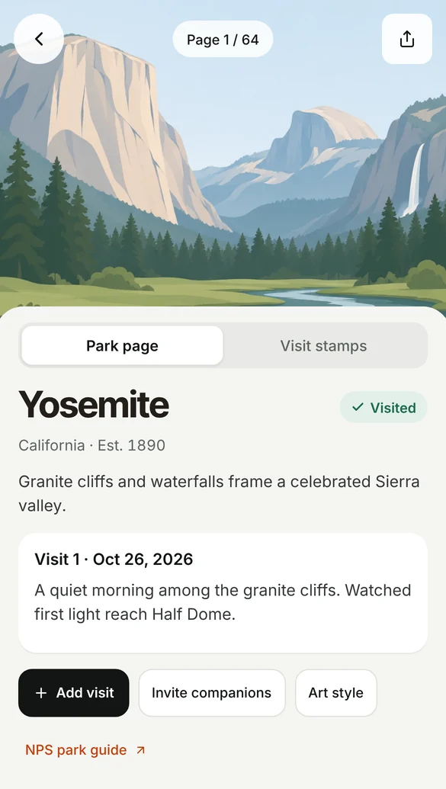
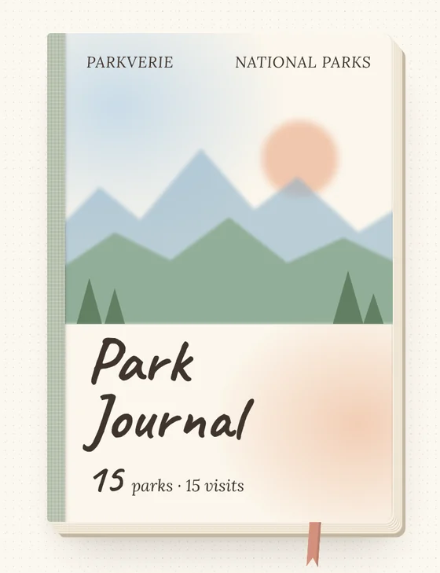
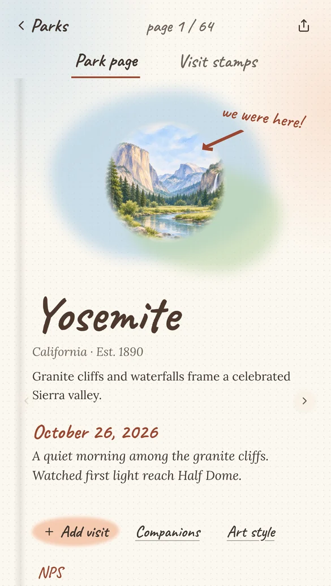
How to Use It
To try it, open parkverie.com and choose "Try without an account", which starts a guest journal with no sign-up. Start with Bulk check-in to mark the parks you have already visited, since this step needs no dates. Then open a park and add a visit with its date and a short note.
The Journal tab shows the journal as a book, and clicking the cover opens it to the park pages. The Poster tab draws the collection as a poster and saves it as an image.
An account keeps the journal in the cloud and adds photos, friends, and shared trips. Visits recorded as a guest can be imported at sign-up, and the iPhone app uses the same account.
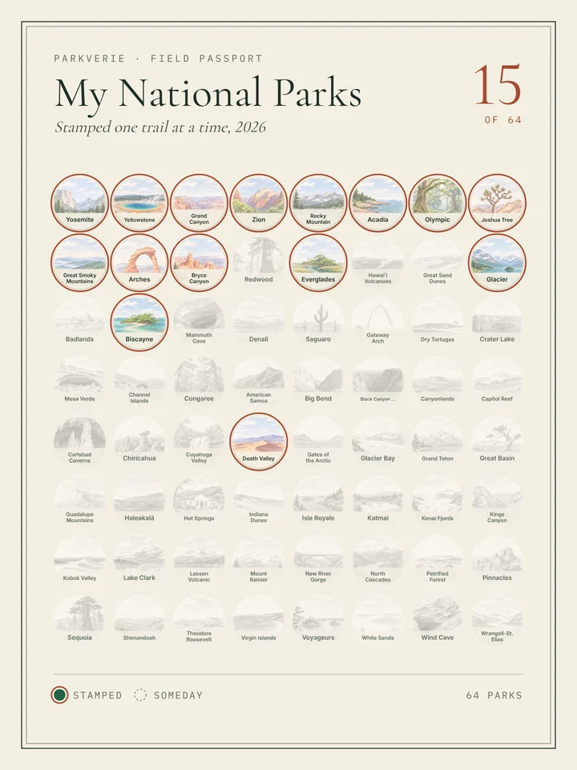
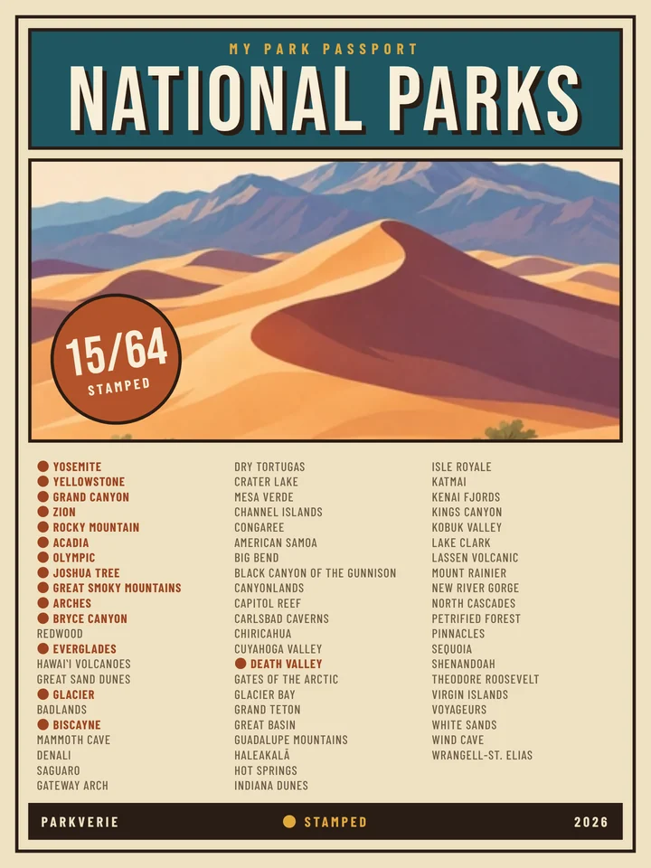
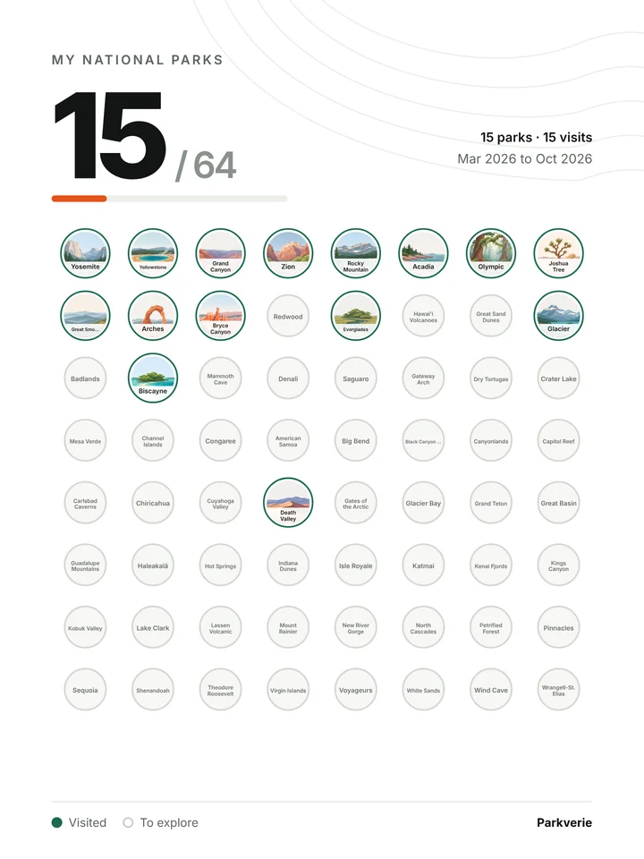
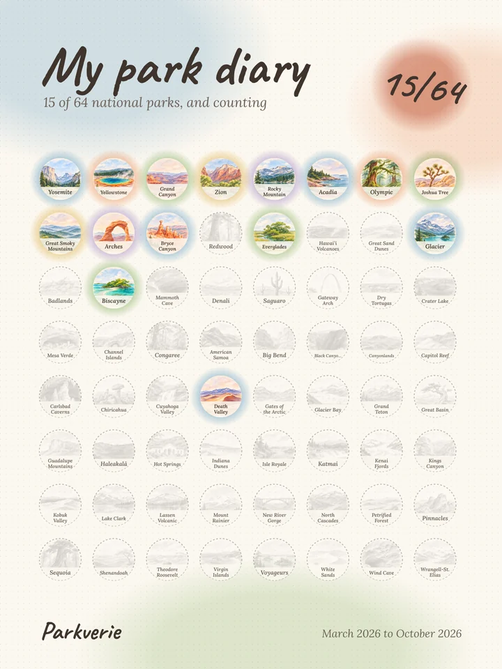
A Note on the Book
I wanted the journal to feel like a real book. The cover swings open on its spine, and in the Field journal look an elastic strap holds it closed. The strap stretches when pulled and snaps back when released. Pulling it past the edge of the book opens the journal. On iPhone, a page turns with a paper curl that follows the finger.
Parkverie is free on the web at parkverie.com and on the App Store. It is an independent project, not affiliated with the National Park Service, and some of the park artwork is AI-assisted.